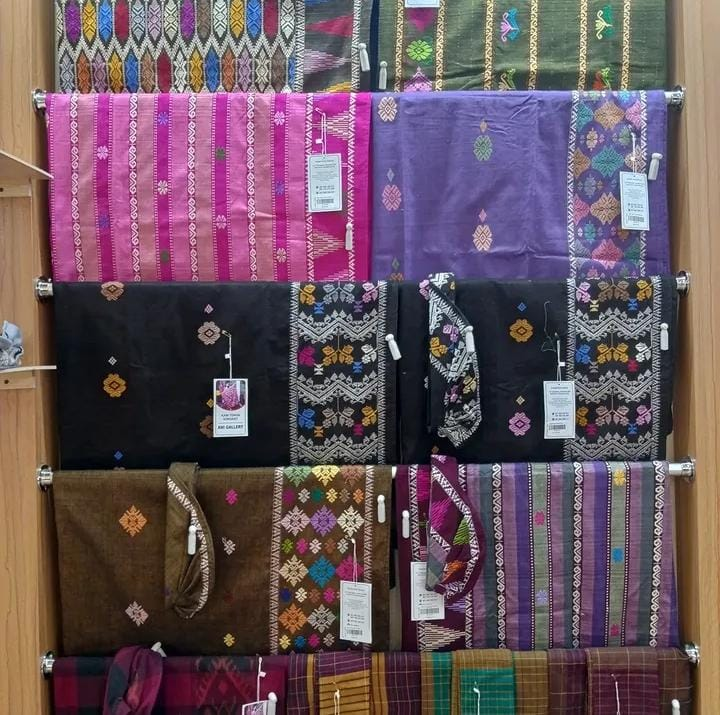
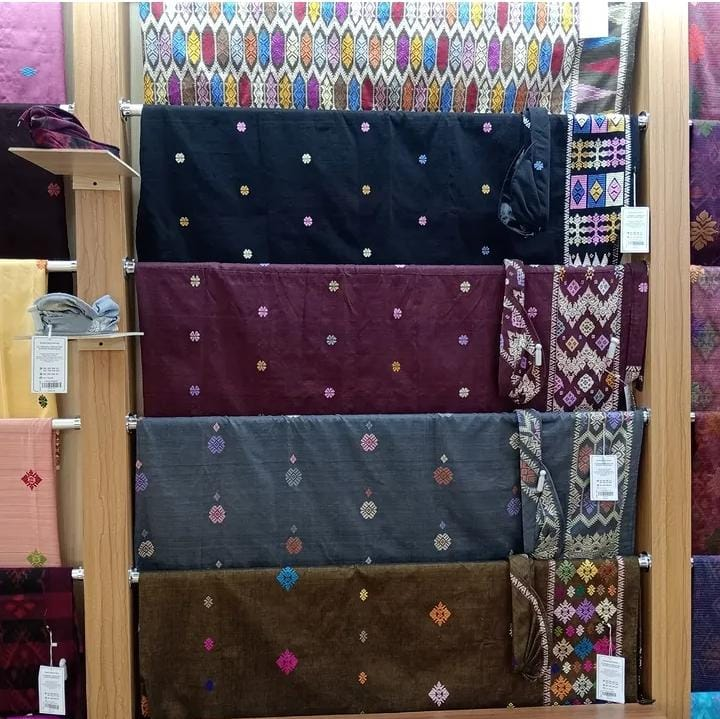

Di balik setiap helai tenun, tersimpan karya seni bernilai luhur yang lahir dari tradisi dan kisah yang tak lengkang oleh waktu. Nikmati pesona tenun Bali, warisan budaya yang teru hidup, dirawat, dan diwariskan dengan penuh cinta dari generai ke generasi.
Klik tombol "Jelajahi Motif dengan AR" untuk membuka kamera web AR dari perangkat Anda langsung melalui browser tanpa aplikasi tambahan.
Arahkan kamera ke gambar marker khusus yang telah kami sediakan untuk menjelajahi motif.
Saksikan kain tenun menjadi hidup dengan model 3D memukau, sambil mempelajari filosofi dan informasi detail mengenai setiap motifnya.

Setiap helai kain songket melewati tahapan panjang yang membutuhkan ketelitian tinggi serta dedikasi luar biasa dari para penenun mendedikasikan waktunya untuk sebuah mahakarya.
Pencelupan warna benang untuk memberikan warna sesuai motif yang diinginkan.
Kemudian dilanjutkan dengan proses pemintalan benang (pengeliingan) agar benang menjadi kuat dan siap digunakan.
Setelah itu dilakukan penggulungan benang atau proses menghani untuk menyusun benang lungsin secara rapi sesuai ukuran kain.
Tahap terakhir adalah proses menenun, yaitu menyatukan benang lungsin dan pakan hingga membentuk kain songket dengan motif yang indah.

Anigallery hadir merajut kembali memori dan keahlian nusantara. Kami bertujuan melestarikan dan memperkenalkan Tenun Songket ke panggung dunia melalui sentuhan teknologi inovatif.
Berawal dari kecintaan mendalam terhadap kebudayaan lokal, kami berinovasi dengan menggabungkan tradisi tenun tangan otentik dengan Augmented Reality. Misi kami adalah untuk memastikan kemudahan aksesibilitas dalam mempelajari dan mengapresiasi mahakarya tradisional bagi generasi muda.
Hubungi Kami